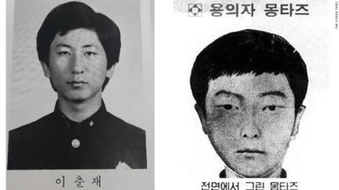
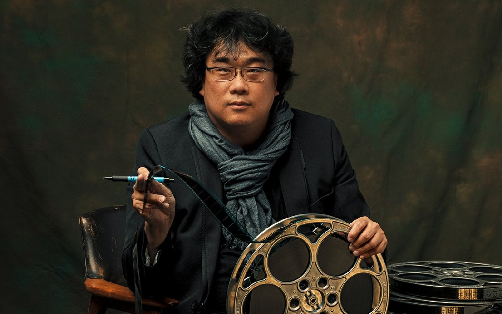

Bong Joon-ho
En 1986, dans la province de Gyunggi, le corps d'une jeune femme violée puis assassinée est retrouvé dans la campagne. Deux mois plus tard, d'autres crimes similaires ont lieu. Dans un pays qui n'a jamais connu de telles atrocités, la rumeur d'actes commis par un serial killer grandit de jour en jour. Une unité spéciale de la police est ainsi créée dans la région afin de trouver rapidement le coupable. Elle est placée sous les ordres d'un policier local et d'un détective spécialement envoyé de Séoul à sa demande. Devant l'absence de preuves concrètes, les deux hommes sombrent peu à peu dans le doute...
Rares sont les films qui ne résolvent pas leurs propres énigmes. Car, on peut se demander, pourquoi aller voir un film si l’on reste sur sa faim, si les mystères ne sont pas dissipés ? Bien qu’il y ait plusieurs réponses possibles, il n’en demeure pas moins qu’une des joies esthétiques dominantes du cinéma est produite par un sentiment d’équilibre narratif, de sérénité face à un ordre qui s’accomplit. Preuve en est l’enseignement narratologique élémentaire que nous recevons à l’école : une histoire nécessite un héros, une quête, des péripéties et une fin si possible heureuse : l’accomplissement. L’art peut donner ce dont la réalité en général est plutôt avare (une fin qui réussit, le triomphe sur l’adversité). Dès lors qu’un film ne présente pas ce schéma, il est quelque peu suspect. Nous devons lui trouver un sens et une raison qui ne tient pas dans le phénomène de résorption et d’équilibre. Disons plutôt que notre attention est naturellement intensifiée du fait de cette transgression narrative, et qu’elle doit par conséquent trouver une explication à celle-ci. Une hypothèse facile consiste à voir dans le non-accomplissement une manière militante de décrire le réel. Fellini, par exemple, fruste sciemment le spectateur à la fin de Il bidone pour ne pas faire jouer à l’art le rôle de simple pacificateur moral. Il semble dire quelque chose comme : « le cinéma ne doit pas fuir la réalité, mais l’exprimer même dans ses contradictions et son tragique ». C’est une idée propre au néoréalisme des années 50-60 qui tend à mettre en scène, en images « le coefficient d’adversité » présent dans la réalité. Par probité, il faut donc rompre avec le schéma du cinéma-accompli, du cinéma-triomphant. Memories of Murder Le film qui nous intéresse, Memories of Murder, nécessite une explication particulière. Bong Joon-ho nous raconte une histoire dans laquelle les policiers sont dans l’incapacité de trouver une description congruente de l’assassin. Même lorsque les preuves semblent converger, elles sont invalidées à la dernière minute… Les efforts des hommes ne sont pas récompensés ; le réel et leur propre bêtise semblent s’assurer de leur perpétuel échec. Mais ce n’est pas là l’idée qui nous intéresse. Le film est mis en scène de manière à guider une interprétation qui peut sembler cocasse dans un premier temps : le tueur ne se trouve pas dans le film. Souvenez-vous du gros plan final sur le visage de l’inspecteur Park Doo-man. Alors qu’il interroge une petite fille qui a certainement vu le tueur, elle se contente, comme toute description, d’affirmer que le tueur ressemble à tout le monde, qu’il a un visage ordinaire. Park Doo-man fixe alors l’objectif avec insistance. Le plan (1.1-1.3) est assez subtil: 1) il regarde l’horizon comme si le tueur s’y trouvait, 2) il fixe l’objectif, 3) un léger mouvement de caméra permet d’intensifier l’importance de ce dernier regard. La réalisation soudaine de Park est le contenu même de notre hypothèse ; à savoir que ce visage ordinaire est celui du spectateur. Il ne cherche désormais plus dans sa réalité, mais dans la nôtre: nous sommes l’assassin.
Lundi dernier, le tueur de l'affaire Memories of Murder est passé devant le tribunal. Après des années d'enquête et d'échecs, il vient enfin de faire ses aveux pour le meurtre de 14 femmes et jeunes filles il y a maintenant trois décennies. Il est l'homme au centre de l'un des meurtres en série les plus notoires du pays. Il a notamment déclaré être surpris de ne pas avoir été arrêté plus tôt. Dénommé Lee Chun-jae, il a fait ses aveux devant la justice, mais également devant Yoon (dont le vrai nom a été gardé secret en raison d'une loi sud-coréenne qui protège la vie privée des suspects et des criminels). Ce dernier a été la seule personne reconnue coupable pour l'un des meurtres de Lee Chun-jae. Il a protesté pendant des années à clamer son innocence. Ses avocats ont demandé un nouveau procès pour tenter d'annuler sa condamnation. Il est libéré en 2008 après avoir passé 20 ans en prison pour le viol et le meurtre d'une jeune fille de 13 ans en 1988. Pendant une décennie entière, les 9 autres meurtres n'ont jamais été résolus.
Fils d'un designer, Joon-ho Bong s'épanouit d'abord au ciné-club de l'université de sociologie de Yonsei à Séoul avant d'étudier le cinéma à la Korean Academy of Film Arts. Démontrant déjà ses talents de cinéaste, son film de fin d'études est sélectionné aux Festivals de Vancouver et de Hong Kong. Fort de ses débuts internationaux, il tourne son premier long métrage en 35mm, Barking Dog, où son humour empreint de sarcasme le révèle auprès de l'industrie cinématographique coréenne. C'est toutefois grâce au thriller Memories of Murder, sur l'affaire non résolue du premier tueur en série coréen, qu'il connait un véritable succès commercial et critique dépassant alors les frontières de son pays. Il confirme son talent en 2006 avec The Host, où il mélange habilement le film de monstre, la chronique familiale et la comédie satirique. Egalement teinté de réflexion écologique, The Host est présenté à Cannes à la Quinzaine des Réalisateurs et consolide au passage la renommée internationale du réalisateur. Une renommée qui le permet de participer au triptyque Tokyo ! en 2008 dans lequel il offre sa vision de la mégalopole japonaise aux côtés de cinéastes confirmés comme Leos Carax et Michel Gondry. Joon-ho Bong nous offre ensuite Mother, le touchant portrait d'une mère tentant de prouver l'innocence de son fils. Projeté à Cannes dans le cadre de la sélection Un Certain regard, le film bénéficie d'un bel accueil critique. Prouvant une nouvelle fois son éclectisme, il se penche dès lors sur La Transperceneige, l'adaptation de la bande dessinée post apocalyptique créée par les Français Jacques Lob et Jean-Marc Rochette. Pour ce projet ambitieux, il s'entoure d'un autre grand nom du cinéma coréen s'imposant autant en son pays qu'à l'étranger : Park Chan-wook, qui assure le rôle de producteur.
